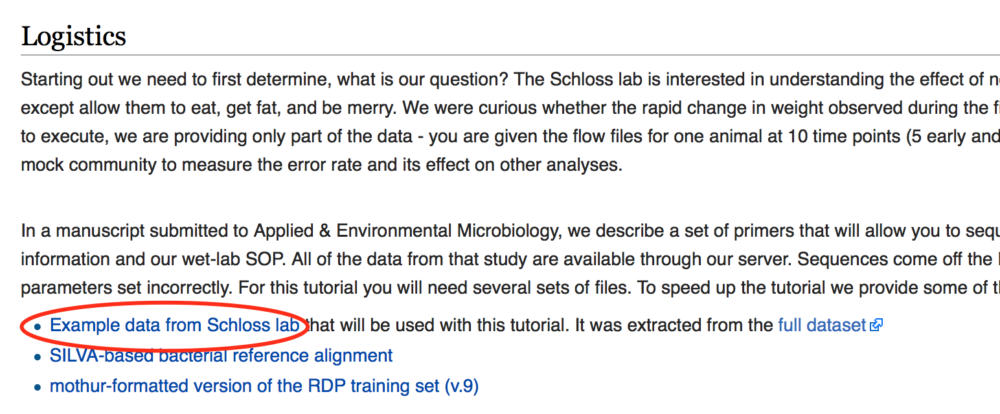

2. Basic Microbiome Analysis¶
2.1. QIIME¶
Note
- Required OS
OS x or Linux.
- Software
- Documentation
- Author
This document is created by Saranga Wijeratne
2.1.1. File Formats¶
This section includes descrption of varies file formats, including Qiime scripts, and parameters files. Read more here
Qiime Script index: Index of all the scripts used in Qiime.
Metadata mapping files: Metadata mapping files provide per-sample metadata.
Tip
Metadata mapping file example is given here. Read the section carefully. If you are planing to creat the mapping file by hand read this section.
Biom File: OTU observation file. Read more here
2.1.2. Files You Need to Have¶
Following files need to be downloaded or presented before you start the pipeline. For this tutorial, Mothur tutorial data published in Schloss Wiki will use. These data are 16s rRRNA Amplicons sequenced with MiSeq technology.
Create Folders
Make a new directory MCICQiime and then cd to move into the dirctory.
$ mkdir MCICQiime $ cd MCICQiime
Download data from Schloss Wiki
For this tutorial download only dataset shown in the image below (i.e Example data from Scholoss lab).
{kind=link}
Inside the MCICQiime, issue following command to get the data. Data is archived. unzip -j will extract all the files to same directory where you are on right now.
Rename the filenames to make it easy to downstream analysis.
Command explanation.
for f in *.fastq;reads anyfile ends wiht .fastq one at a timedostart body of the for loopmv $f do mv $f ${f%%_L*}.fastq;rename $f (i.e F3D0_S188_L001_R1_001.fastq) to ${f%%_L*}.fastq (i.e F3D0_S188.fastq)donefinish the loop
Data Explanation
Files and experiment are discribed as follows in Schloss Wiki.
Because of the large size of the original dataset (3.9 GB) we are giving you 21 of the 362 pairs of fastq files.For example, you will see two files: F3D0_S188_L001_R1_001.fastq and F3D0_S188_L001_R2_001.fastq. These two files correspond to Female 3 on Day 0 (i.e. the day of weaning). The first and all those with R1 correspond to read 1 while the second and all those with R2 correspond to the second or reverse read. These sequences are 250 bp and overlap in the V4 region of the 16S rRNA gene; this region is about 253 bp long. So looking at the files in the MiSeq_SOP folder that you’ve downloaded you will see 22 fastq files representing 10 time points from Female 3 and 1 mock community. You will also see HMP_MOCK.v35.fasta which contains the sequences used in the mock community that we sequenced in fasta format.
2.1.3. GBSv2 Pipeline Plugins¶
Plugin |
Description |
|---|---|
GBSSeqToTagDBPlugin |
Executed to pull distinct tags from the database and export them in the fastq format. More |
TagExportToFastqPlugin |
Retrieves distinct tags stored in the database and reformats them to a FASTQ file. More |
SAMToGBSdbPlugin |
Used to identify SNPs from aligned tags using the GBS DB. More |
DiscoverySNPCallerPluginV2 |
Takes a GBSv2 database file as input and identifies SNPs from the aligned tags. More |
SNPQualityProfilerPlugin |
Scores all discovered SNPs for various coverage depth and genotypic statistics for a given set of taxa. More |
UpdateSNPPositionQualityPlugin |
Reads a quality score file to obtain quality score data for positions stored in the snpposition table. More |
SNPCutPosTagVerificationPlugin |
Allows a user to specify a Cut or SNP position for which they would like data printed. More |
GetTagSequenceFromDBPlugin |
Takes an existing GBSv2 SQLite database file as input and returns a tab-delimited file containing a list of Tag Sequences stored in the specified database file. More |
ProductionSNPCallerPluginV2 |
Converts data from fastq and keyfile to genotypes then adds these to a genotype file in VCF or HDF5 format. More |
2.1.4. GBSv2 Pipeline¶
Load Tassel 5.0 module
1 | $ module load Tassel/5.0
|
Useful commands
To check all the plugins available, type
1 | $ run_pipeline.pl -Xmx200g -ListPlugins
|
To check all the parameters for given Plugin, Ex: GBSSeqToTagDBPlugin, type
1 | $ run_pipeline.pl -fork1 -GBSSeqToTagDBPlugin -endPlugin -runfork1
|
Tip
Users are recommended to read more about GBS command line options in here. Page 1-2
Create necessary folders and copy your raw data (fastqs), reference file and key file to appropriate folder,
1 | $ mkdir fastq ref key db tagsForAlign hd5
|
Commands for the pipeline
1 2 3 4 5 6 7 8 9 | $ run_pipeline.pl -Xmx200g -fork1 -GBSSeqToTagDBPlugin -i fastq -k key/Tomato_key.txt -e ApeKI -db db/Tomato.db -kmerLength 85 -mnQS 20 -endPlugin -runfork1
$ run_pipeline.pl -fork1 -TagExportToFastqPlugin -db db/Tomato.db -o tagsForAlign/tagsForAlign.fa.gz -c 5 -endPlugin -runfork1
$ cd ref
$ bwa index -a is S_lycopersicum_chromosomes.2.50.fa
$ cd ../
$ bwa samse ref/S_lycopersicum_chromosomes.2.50.fa tagsForAlign/tagsForAlign.sai tagsForAlign/tagsForAlign.fa.gz > tagsForAlign/tagsForAlign.sam
$ run_pipeline.pl -fork1 -SAMToGBSdbPlugin -i tagsForAlign/tagsForAlign.sam -db db/Tomato.db -aProp 0.0 -aLen 0 -endPlugin -runfork1
$ run_pipeline.pl -fork1 -DiscoverySNPCallerPluginV2 -db db/Tomato.db -sC "chr00" -eC "chr12" -mnLCov 0.1 -mnMAF 0.01 -endPlugin -runfork1
$ run_pipeline.pl -fork1 -ProductionSNPCallerPluginV2 -db db/Tomato.db -e ApeKI -i fastq -k key/Tomato_key2.txt -kmerLength 85 -mnQS 20 -o hd5/HapMap_tomato.h5 -endPlugin -runfork1
|